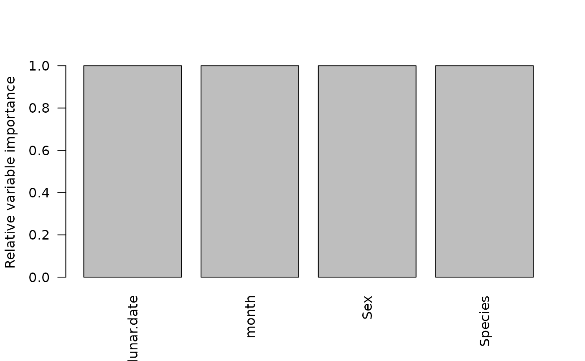
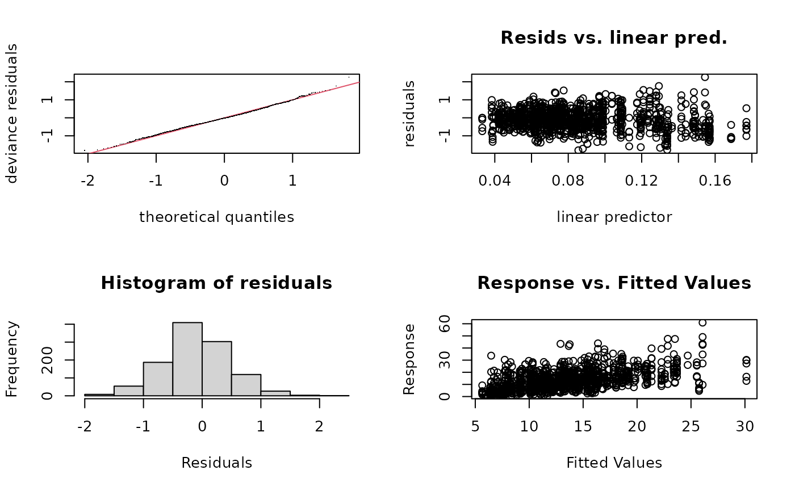
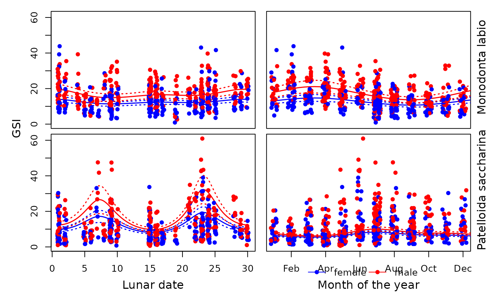

Overview
This case study examines reproductive patterns over multiple temporal scales in two tropical intertidal gastropods using full subsets Generalised Additive Models (GAMs). The response variable is gonadosomatic index (GSI), modelled using a Gamma distribution.
The example demonstrates how cyclic smoothers and factor interactions
can be combined within the FSSgam framework to analyse
lunar, semi‑lunar and seasonal reproductive patterns.
Background
Studies of reproductive biology are fundamental to understanding resource allocation, larval recruitment and population dynamics (Underwood and Keough 2001). Moreover, these studies provide valuable insights into life history strategies, uncovering important interactions with environmental conditions and habitats, therefore supporting the development of appropriate measures for conservation and management. In addition, for species of commercial importance, these studies also provide in situ parameters critical for population modelling and prediction, underpinning efforts to ensure sustainable fishing.
Reproductive cycles can occur at a number of scales, ranging (in decreasing frequency) from circadian, semi-lunar and lunar to seasonal. Despite an apparent lack of pronounced seasonality in climate in the tropics, many organisms display seasonal peaks in reproductive activity (Brown and Shine 2006), the most striking example being that of annual or bi-annual synchronous spawning in scleractinian corals (e.g. Babcock et al. 1994). In marine systems, lunar and semi-lunar cycles are an obvious cue for reproduction, particularly for broadcast spawners, for which synchronicity is critical for fertilization success (Babcock et al. 1992). Few studies have concurrently examined effects of annual and lunar patterns on the spawning of marine invertebrates in the tropics in a manner that elucidates relative reproductive output at both scales, since sampling timing for intertidal organisms often coincides with both tide height and lunarity, which can confound conclusions about reproductive biorhythmicity.
Both lunar and seasonal patterns are cyclical in nature, which is a challenge for conventional/traditional analyses. Calendar month is frequently denoted as a categorical factor and statistically evaluated via Analyses of Variance (ANOVA) or similar techniques (e.g. Liu 1994; Ettinger-Epstein et al. 2007). Formal elucidation of lunar and semilunar cycles mostly take two major forms in the literature: (a) factorial analyses in which moon phase is distributed into two to four categories (e.g. Iliffe and Pearse 1982); and (b) periodic regression where analyses are conducted on sine and cosine angular terms that prescribe lunar days (e.g. Cavraro et al. 2014). Categorized moon phase is usually analysed via ANOVA, although alternative methods applied include Chi-squared contingency tests (Battaglene et al. 2002), and paired t-tests (within months) have also been applied to two-level categorization of moon phases (e.g. Iliffe and Pearse 1982). Periodic regression (see deBruyn and Meeuwig 2001) models the response as a function of sine and cosine terms of lunar day (in radians), with separate terms to detect semi-lunar cycles, and is beneficial in that it correctly captures the cyclical nature of lunar days rather than constraining this temporal element to categories. The parameter estimates for lunar day are coefficients which define phase shift and amplitude (Batschelet 1981). The downside of applying either categorical ANOVAs or periodic regression to the elucidation of biorhythmic cycles in reproduction is the number of parameters that implicitly must be estimated, although a model-building approach could lead to the exclusion of semi-lunar cycles, if appropriate.
In this case study, Generalised Additive Models (GAMs) were used to elucidate reproductive patterns at multiple temporal scales in two species of broadcast spawning gastropods. GAMs were first proposed by Hastie and Tibshirani (1990), and are able to deal with non-linear relationships between an independent variable and multiple, potentially interactive predictors in the same model. GAMs have been widely used to model intra-annual trends in the abundances (e.g. Bellido et al. 2001), condition and reproductive activity (Dunn and Forman 2011) of commercially important species, but remain relatively rarely applied to non-fishery species (but see Guijarro et al. 2012). The full subsets gam function also allows other factors (e.g. sex) to be examined as both interactions (e.g. a different relationship with lunar day within each level), and as main effects (i.e. a shift in the overall relationship up or down within each level). Patelloida saccharina and Monodonta labio are common in the rocky intertidal, and are among the most abundant gastropods inhabiting artificial seawalls and breakwaters in Singapore (Lee et al. 2009). To examine this, the reproductive cycles of these two gastropods, determined by gonadosomatic index, were assessed across three temporal scales: among years, among months (i.e. yearly pattern), and within month (i.e. lunar and semi-lunar cycle).
Methods
Samples were collected from St. John’s Island (southern island complex), Singapore (1°16.8’N, 103°52.2’E). Reproductive cycles for Patelloida saccharina and Monodonta labio were determined from 10-15 individuals (shell length 7-25 mm for P. saccharina and 10-30 mm for M. labio) that were collected from July 2003 to July 2004, every three days for the first five months and every seven days for the following eight months. A total of 744 individuals of P. saccharina and 549 individuals of M. labio were collected.
Specimens were relaxed in 1:1 7.5% MgCl:seawater solution and then preserved in 4% buffered seawater formalin. After preservation, individuals were removed from their shells and gonadal material removed, and the wet weight of gonadal and somatic tissues were obtained, giving the Gonadosomatic Index (GSI = wet weight gonad / wet weight somatic x 100). Histology sections were also prepared for female gonads, staged following the oocyte categories of Orton et al. (1956), Underwood (1974) and Liu (1994), to validate the use of GSI as a measure of reproductive output. Histological examination showed a strong relationship between GSI and gonad maturity for both species, supporting GSI as an appropriate proxy for reproductive output, although the relationship was less clear-cut for M. labio than for P. saccharina.
Predictor specification
Both lunar.date and month are entered into the model as continous cyclic smooths. This ensures that that end tails of the smooths meet smoothly. For example, this means that the estimate for Dec smoothly links to estimates from January, in the case of month.
Sex and Species are included as factors.
cyclic.vars <- c("lunar.date", "month")
cont.vars <- c("lunar.date", "month")
factor.vars <- c("Sex", "Species")Both month and lunar date are treated as cyclic continuous predictors, allowing smooth transitions at their boundaries.
Full subsets GAM analysis
GSI is modelled as a Gamma distribution.
Sex and Species are included as interaction terms with each other (via factor.factor.interactions = TRUE), and as interaction terms between the two smoothers (this is default behaviour for FSSgam, see ?generate_model_set).
use.dat <- dat
start.fit <- gam(
GSI ~ s(lunar.date, k = 5, bs = "cc"),
family = Gamma(),
data = use.dat
)
model.set <- generate_model_set(
use.dat = use.dat,
test.fit = start.fit,
pred.vars.cont = cont.vars,
pred.vars.fact = factor.vars,
cyclic.vars = cyclic.vars,
k = 5,
factor.factor.interactions = TRUE,
smooth.smooth.interactions = TRUE,
max.predictors = 4
)
out.list <- fit_model_set(model.set, parallel = FALSE)Model assessment
Examine predictor correlations. This looks as would be expected. Note the function does estimate correlations between factors as well as continuous predictors. See ?generate_model_set for more details on how this is done.
model.set$predictor.correlations## lunar.date month Sex Species Sex.I.Species
## lunar.date 1.000000000 0.03997010 0.002458829 0.03577236 0.03618006
## month 0.039970104 1.00000000 0.010673718 0.04418362 0.05979362
## Sex 0.002458829 0.01067372 1.000000000 0.04597970 0.99999995
## Species 0.035772358 0.04418362 0.045980185 1.00000000 0.99999995
## Sex.I.Species 0.036180060 0.05979362 0.707483898 0.70747167 1.00000000Examine the model table. Note that the bet model includes all of the predictors, with interactions between lunar date and species, month and species, and an additive effect of Sex.
mod.table <- out.list$mod.data.out
mod.table <- mod.table[order(mod.table$AICc), ]
tab <- mod.table |>
as_tibble() |>
select(modname, AICc, r2.vals, edf, delta.AICc, wi.AICc)
knitr::kable(
tab,
digits = 3,
caption = "Model comparison summary based on AICc"
)| modname | AICc | r2.vals | edf | delta.AICc | wi.AICc |
|---|---|---|---|---|---|
| lunar.date.by.Species+month.by.Species+Sex+Species | 7233.999 | 0.276 | 13.96 | 0.000 | 0.998 |
| lunar.date.by.Sex.I.Species+month.by.Sex.I.Species+Sex.I.Species | 7246.967 | 0.273 | 23.26 | 12.968 | 0.002 |
| lunar.date.by.Species+month.by.Species+Species | 7296.470 | 0.228 | 12.88 | 62.471 | 0.000 |
| lunar.date.by.Species+month+Sex+Species | 7339.484 | 0.208 | 11.21 | 105.484 | 0.000 |
| lunar.date+month.by.Species+Sex+Species | 7342.382 | 0.224 | 11.25 | 108.383 | 0.000 |
| lunar.date.by.Sex+month.by.Species+Sex+Species | 7343.588 | 0.223 | 14.02 | 109.589 | 0.000 |
| lunar.date.by.Species+month.by.Sex+Sex+Species | 7344.032 | 0.207 | 13.50 | 110.033 | 0.000 |
| lunar.date.by.Sex.I.Species+month+Sex.I.Species | 7344.862 | 0.205 | 16.10 | 110.863 | 0.000 |
| lunar.date+month.by.Sex.I.Species+Sex.I.Species | 7348.601 | 0.222 | 16.58 | 114.602 | 0.000 |
| lunar.date.by.Species+Sex+Species | 7348.865 | 0.198 | 8.70 | 114.866 | 0.000 |
| lunar.date.by.Sex.I.Species+Sex.I.Species | 7354.790 | 0.194 | 13.49 | 120.791 | 0.000 |
| month.by.Species+Sex+Species | 7378.703 | 0.189 | 8.11 | 144.704 | 0.000 |
| month.by.Sex.I.Species+Sex.I.Species | 7384.738 | 0.189 | 13.38 | 150.739 | 0.000 |
| lunar.date.te.month+Sex.I.Species | 7384.896 | 0.206 | 17.18 | 150.897 | 0.000 |
| lunar.date.te.month+Sex+Species | 7386.138 | 0.212 | 16.21 | 152.139 | 0.000 |
| lunar.date+month.by.Species+Species | 7401.838 | 0.173 | 10.11 | 167.839 | 0.000 |
| lunar.date.by.Species+month+Species | 7408.180 | 0.152 | 10.09 | 174.181 | 0.000 |
| lunar.date.by.Species+Species | 7419.826 | 0.140 | 7.67 | 185.827 | 0.000 |
| lunar.date+month+Sex.I.Species | 7425.448 | 0.163 | 9.75 | 191.448 | 0.000 |
| lunar.date+month+Sex+Species | 7426.179 | 0.168 | 8.76 | 192.180 | 0.000 |
| lunar.date.by.Sex+month+Sex+Species | 7428.421 | 0.166 | 11.46 | 194.422 | 0.000 |
| lunar.date+month.by.Sex+Sex+Species | 7430.460 | 0.168 | 11.16 | 196.460 | 0.000 |
| lunar.date.by.Sex+month.by.Sex+Sex+Species | 7432.573 | 0.167 | 13.85 | 198.574 | 0.000 |
| lunar.date+Sex.I.Species | 7436.578 | 0.149 | 6.90 | 202.578 | 0.000 |
| lunar.date+Sex+Species | 7437.742 | 0.154 | 5.90 | 203.743 | 0.000 |
| month.by.Species+Species | 7438.992 | 0.137 | 7.05 | 204.993 | 0.000 |
| lunar.date.by.Sex+Sex+Species | 7440.063 | 0.152 | 8.50 | 206.064 | 0.000 |
| lunar.date.te.month+Sex | 7446.902 | 0.158 | 15.11 | 212.902 | 0.000 |
| lunar.date.te.month+Species | 7454.611 | 0.150 | 14.98 | 220.611 | 0.000 |
| month+Sex.I.Species | 7460.792 | 0.128 | 6.72 | 226.793 | 0.000 |
| month+Sex+Species | 7461.154 | 0.133 | 5.74 | 227.154 | 0.000 |
| month.by.Sex+Sex+Species | 7464.742 | 0.131 | 7.05 | 230.742 | 0.000 |
| Sex.I.Species | 7467.887 | 0.118 | 4.00 | 233.888 | 0.000 |
| Sex+Species | 7468.607 | 0.123 | 3.00 | 234.607 | 0.000 |
| lunar.date+month+Sex | 7485.644 | 0.116 | 7.76 | 251.645 | 0.000 |
| lunar.date.by.Sex+month+Sex | 7489.178 | 0.115 | 10.46 | 255.179 | 0.000 |
| lunar.date+month.by.Sex+Sex | 7490.153 | 0.116 | 10.17 | 256.153 | 0.000 |
| lunar.date+month+Species | 7490.714 | 0.110 | 7.71 | 256.715 | 0.000 |
| lunar.date.by.Sex+month.by.Sex+Sex | 7493.776 | 0.115 | 12.86 | 259.776 | 0.000 |
| lunar.date+Sex | 7495.473 | 0.102 | 4.90 | 261.474 | 0.000 |
| lunar.date.by.Sex+Sex | 7499.000 | 0.101 | 7.49 | 265.001 | 0.000 |
| lunar.date+Species | 7504.163 | 0.093 | 4.90 | 270.164 | 0.000 |
| lunar.date.te.month | 7521.973 | 0.089 | 13.87 | 287.974 | 0.000 |
| month+Sex | 7522.975 | 0.079 | 4.76 | 288.976 | 0.000 |
| month+Species | 7525.747 | 0.074 | 4.64 | 291.747 | 0.000 |
| month.by.Sex+Sex | 7526.348 | 0.076 | 5.88 | 292.349 | 0.000 |
| Sex | 7527.908 | 0.068 | 2.00 | 293.909 | 0.000 |
| Species | 7535.403 | 0.061 | 2.00 | 301.404 | 0.000 |
| lunar.date+month | 7556.756 | 0.052 | 6.73 | 322.757 | 0.000 |
| lunar.date | 7568.113 | 0.035 | 3.90 | 334.114 | 0.000 |
| month | 7594.033 | 0.013 | 3.71 | 360.034 | 0.000 |
| null | 7600.418 | 0.000 | 1.00 | 366.419 | 0.000 |
Examine the variable importance scores. In this case study, variable importance is not particularly interesting because all predictors are in the top model, and they are therefore all 1.
barplot(
out.list$variable.importance$bic$variable.weights.raw,
las = 2,
ylab = "Relative variable importance"
)
Predictor correlations were minimal, and all candidate models were retained in the model set.
Best‑supported model
We can extract and view the default gam plot of the “best” model using:
best.model <- out.list$success.models[[as.character(mod.table$modname[1])]]
plot(best.model, all.terms = TRUE, pages = 1)Model checks can also be done using the mgcv gam methods:
gam.check(best.model)
##
## Method: GCV Optimizer: outer newton
## full convergence after 8 iterations.
## Gradient range [6.886353e-11,6.377734e-07]
## (score 0.3332369 & scale 0.3350731).
## Hessian positive definite, eigenvalue range [7.71641e-06,0.0001997042].
## Model rank = 15 / 15
##
## Basis dimension (k) checking results. Low p-value (k-index<1) may
## indicate that k is too low, especially if edf is close to k'.
##
## k' edf k-index p-value
## s(lunar.date):Speciesmono 3.00 2.79 0.72 <2e-16 ***
## s(lunar.date):Speciespsac5 3.00 2.99 0.72 <2e-16 ***
## s(month):Speciesmono 3.00 2.26 0.72 <2e-16 ***
## s(month):Speciespsac5 3.00 2.93 0.72 <2e-16 ***
## ---
## Signif. codes: 0 '***' 0.001 '**' 0.01 '*' 0.05 '.' 0.1 ' ' 1And finally a summary of the best model using:
summary(best.model)##
## Family: Gamma
## Link function: inverse
##
## Formula:
## GSI ~ s(lunar.date, by = Species, k = 5, bs = "cc") + s(month,
## by = Species, k = 5, bs = "cc") + Sex + Species
##
## Parametric coefficients:
## Estimate Std. Error t value Pr(>|t|)
## (Intercept) 0.078944 0.002427 32.527 < 2e-16 ***
## Sexmale -0.020572 0.002652 -7.757 1.98e-14 ***
## Speciespsac5 0.031402 0.002996 10.482 < 2e-16 ***
## ---
## Signif. codes: 0 '***' 0.001 '**' 0.01 '*' 0.05 '.' 0.1 ' ' 1
##
## Approximate significance of smooth terms:
## edf Ref.df F p-value
## s(lunar.date):Speciesmono 2.787 3 3.702 0.00783 **
## s(lunar.date):Speciespsac5 2.988 3 42.745 < 2e-16 ***
## s(month):Speciesmono 2.263 3 10.552 < 2e-16 ***
## s(month):Speciespsac5 2.926 3 28.425 < 2e-16 ***
## ---
## Signif. codes: 0 '***' 0.001 '**' 0.01 '*' 0.05 '.' 0.1 ' ' 1
##
## R-sq.(adj) = 0.296 Deviance explained = 28.4%
## GCV = 0.33324 Scale est. = 0.33507 n = 1110Note all predictors are highly significant in this model, which we would typically expect given it was selected by AICc.
We can make a prettier plot to visualise the best model using some custom base R code.
model.dat=model.set$used.data
head(model.dat)## GSI Species Sex year month.label month act.date date
## 1 7.690040 mono female 3 Jul 7 8 2003-07-08
## 2 7.019802 mono female 3 Jul 7 8 2003-07-08
## 3 18.355220 mono female 3 Jul 7 8 2003-07-08
## 4 9.303880 mono female 3 Jul 7 8 2003-07-08
## 5 16.057208 mono female 3 Jul 7 8 2003-07-08
## 6 7.636143 mono female 3 Jul 7 8 2003-07-08
## lunar.date gwt swt rep.id Sex.I.Species
## 1 9 18.26 237.45 28 female mono
## 2 9 35.45 505.00 30 female mono
## 3 9 50.04 272.62 37 female mono
## 4 9 27.84 299.23 41 female mono
## 5 9 50.41 313.94 44 female mono
## 6 9 42.88 561.54 46 female mono
str(model.dat)## 'data.frame': 1110 obs. of 13 variables:
## $ GSI : num 7.69 7.02 18.36 9.3 16.06 ...
## $ Species : Factor w/ 2 levels "mono","psac5": 1 1 1 1 1 1 1 1 1 1 ...
## $ Sex : Factor w/ 2 levels "female","male": 1 1 1 1 1 1 1 2 1 2 ...
## $ year : Factor w/ 2 levels "3","4": 1 1 1 1 1 1 1 1 1 1 ...
## $ month.label : chr "Jul" "Jul" "Jul" "Jul" ...
## $ month : int 7 7 7 7 7 7 7 7 7 7 ...
## $ act.date : int 8 8 8 8 8 8 8 8 8 8 ...
## $ date : chr "2003-07-08" "2003-07-08" "2003-07-08" "2003-07-08" ...
## $ lunar.date : int 9 9 9 9 9 9 9 9 9 9 ...
## $ gwt : num 18.3 35.5 50 27.8 50.4 ...
## $ swt : num 237 505 273 299 314 ...
## $ rep.id : int 28 30 37 41 44 46 47 50 51 53 ...
## $ Sex.I.Species: Factor w/ 4 levels "female mono",..: 1 1 1 1 1 1 1 3 1 3 ...
x.seq=seq(from=1,to=30,length=100)
best.mod.fact.vars=c("Sex","Species")
fact.grid=unique(model.dat[,best.mod.fact.vars])
sex.ltys=c(1,2)
sex.pchs=c(19,21)
sex.lvls=levels(model.dat$Sex)
spp.lvls=levels(model.dat$Species)
sex.cols=c("blue","red")
# create some symbology and colour schemes for plotting
model.dat$pchs=16
for(a in 1:length(sex.lvls)){
model.dat$cols[which(model.dat$Sex==sex.lvls[a])]=sex.cols[a]}
y.lim=c(0,ceiling(max(model.dat$GSI)))
lunar.lim=range(model.dat$lunar.date)
lunar.seq=seq(from=1,to=30,length=100)
month.lim=range(model.dat$month)
month.seq=seq(from=1,to=30,length=100)
month.labels=c("Jan","Feb","Mar","Apr","May","Jun","Jul","Aug","Sep","Oct","Nov","Dec")
spp.labels=c("Monodonta labio", "Patelloida saccharina")
par(mfcol=c(2,2),mar=c(0,0.5,0.5,0.5),oma=c(5,4,0.5,2))
for(x in 1:length(spp.lvls)){
# lunar
spp=spp.lvls[x]
fact.grid.plot=fact.grid[grep(spp,fact.grid$Species),]
plot.dat=model.dat[grep(spp,model.dat$Species),]
plot(NA,ylim=y.lim,xlim=lunar.lim,ylab="",xlab="",main="",xpd=NA,yaxt="n",xaxt="n")
axis(side=2)
if(x==2){axis(side=1)}
for(r in 1:nrow(fact.grid.plot)){
pred.vals=predict(best.model,newdata=data.frame(
lunar.date=lunar.seq,
month=mean(model.dat$month),
Species=spp,
Sex=fact.grid.plot[r,"Sex"]),
type="response",se=T)
lines(x.seq,pred.vals$fit,lwd=1.5,
col=sex.cols[which(fact.grid.plot[r,"Sex"]==sex.lvls)])
lines(x.seq,pred.vals$fit+1.96*pred.vals$se,lty=3,lwd=1.5,
col=sex.cols[which(fact.grid.plot[r,"Sex"]==sex.lvls)])
lines(x.seq,pred.vals$fit-1.96*pred.vals$se, lty=3,lwd=1.5,
col=sex.cols[which(fact.grid.plot[r,"Sex"]==sex.lvls)])}
points(jitter(plot.dat$lunar.date),plot.dat$GSI,pch=16,col=plot.dat$cols)}
# month
for(x in 1:length(spp.lvls)){
spp=spp.lvls[x]
fact.grid.plot=fact.grid[grep(spp,fact.grid$Species),]
plot.dat=model.dat[grep(spp,model.dat$Species),]
plot(NA,ylim=y.lim,xlim=month.lim,ylab="",xlab="",main="",xpd=NA,yaxt="n",xaxt="n")
#if(x==1){axis(side=2)}
if(x==2){axis(side=1,at=c(2,4,6,8,10,12),labels=month.labels[c(2,4,6,8,10,12)])}
for(r in 1:nrow(fact.grid.plot)){
pred.vals=predict(best.model,newdata=data.frame(
lunar.date=mean(model.dat$lunar.date),
month=month.seq,
Species=spp,
Sex=fact.grid.plot[r,"Sex"]),
type="response",se=T)
lines(x.seq,pred.vals$fit,lwd=1.5,
col=sex.cols[which(fact.grid.plot[r,"Sex"]==sex.lvls)])
lines(x.seq,pred.vals$fit+1.96*pred.vals$se,lty=3,lwd=1.5,
col=sex.cols[which(fact.grid.plot[r,"Sex"]==sex.lvls)])
lines(x.seq,pred.vals$fit-1.96*pred.vals$se, lty=3,lwd=1.5,
col=sex.cols[which(fact.grid.plot[r,"Sex"]==sex.lvls)])}
points(jitter(plot.dat$month),plot.dat$GSI,pch=16,col=plot.dat$cols)}
mtext(side=1,text=c("Lunar date","Month of the year"),at=c(0.25,0.75),outer=T,line=2.5)
mtext(side=2,text="GSI",outer=T,line=2)
mtext(side=4,text=spp.labels,at=c(0.75,0.25),outer=T)
legend.dat=unique(model.dat[,c("Sex","cols")])
legend.dat=legend.dat[order(legend.dat$Sex),]
legend("bottom",legend=paste(legend.dat$Sex),bty="n",cex=1,
inset=-0.275,ncol=2,lty=1,col=legend.dat$cols,pch=16,xpd=NA)
Results and discussion
A model with both lunar date and month as interactions with species, along with an intercept effect of sex, showed the highest ranking according to both AICc and BIC, explaining 28% of the variance in GSI for these species (see the model comparison table above). Plots of this top model (see the best-model plot above) indicated that the strong interactions observed for lunar day and month were due to markedly different trends for each of these predictors across the two species. A strong semi-lunar pattern was detected in P. saccharina, with fairly equal peaks in GSI occurring around lunar days 7 and 23, and minima around days 0 and 15; this pattern correlates with minimal tidal range over the sampling period. Lunar patterns were generally much weaker for M. labio GSI, and were also reversed relative to those observed in P. saccharina, with peaks centred on lunar days 0 and 15 and bimodal minima around days 5 and 23. The magnitude of lunar periodicity on GSI was also markedly less pronounced in M. labio than in P. saccharina, in which lunar effects were several times that of seasonal effects.
Initial examinations suggest that both Patelloida saccharina and Monodonta labio are continuous breeders, indicated by GSI values that do not drop below five throughout the year. Near continuous or extended breeding, with slight peaks in intensity during specific times/seasons, have previously been reported in trochids (see Hickman 1992 for a review) and acmaeids (Creese 1980; Catalan and Yamamoto 1993). However, there were differences in the timing of peak reproduction between the two species throughout the year, with M. labio showing the highest output during February and March, and P. saccharina showing peak output in July. February/March denote the end of the Northeast monsoon, with increasing seawater temperatures over the following months, reaching annual peaks around August (Sin et al. 2016). Changes in temperature are known proximate indicators of reproductive seasonality in both limpets as well as trochaceans (Morton and Morton 1983). However, additional factors such as the seasonal availability of food resources may also contribute to the trigger of gametogenesis (Hickman 1992), but were not examined in this study. Values of GSI were higher in males compared to females for both species, regardless of lunar day or time of year, which is a common phenomenon in intertidal gastropods (Creese 1980; Creese and Ballantine 1983; Liu 1994).
Overall, this case study demonstrates the value of GAMs with cyclic splines and interaction structures for dissecting complex reproductive rhythms across multiple temporal scales.